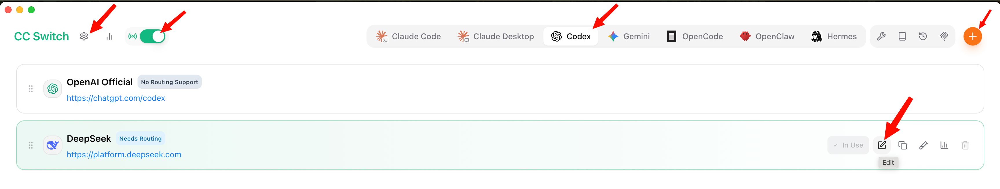
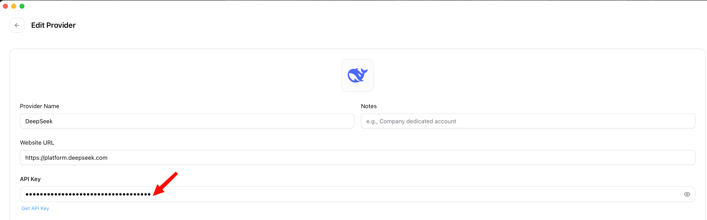
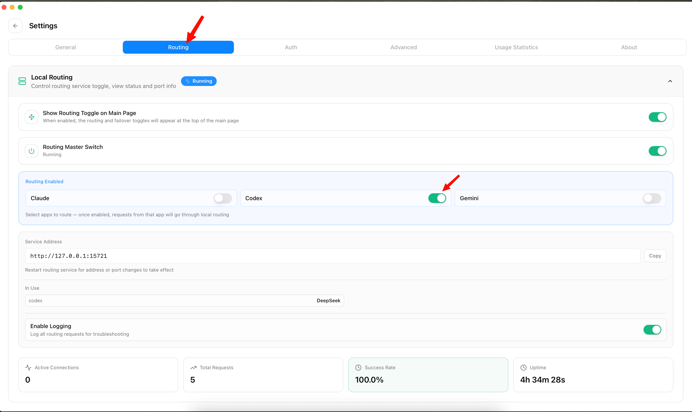
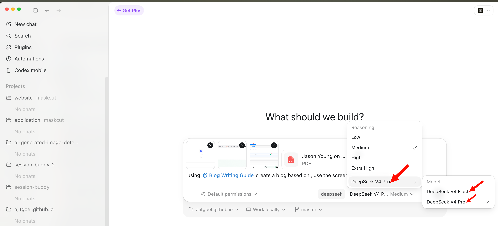

I wanted Codex to use DeepSeek V4 Pro without turning every request into a manual copy-paste exercise. CC Switch made that possible by sitting in the middle, translating requests, and keeping the vendor setup in one place.
The original CC Switch write-up I read was aimed at Claude Desktop. The same idea applies cleanly to Codex: point Codex at the local router, map the model you want, and let CC Switch forward the request to DeepSeek.
The problem is model routing, not the API key
Adding a DeepSeek key is the easy part. The part that usually breaks is the shape of the request and the model name expected by the client.
CC Switch handles three boring but important jobs:
- It translates the client request into the vendor's API format.
- It maps the model shown in the client to the actual model ID sent to the vendor.
- It keeps a local routing service running so the client has one stable endpoint.
That last part matters. If the model is not one the client already knows how to talk to, the local router has to stay on while you use it.
My CC Switch setup for Codex and DeepSeek
I started from the CC Switch provider list, selected Codex in the app switcher, and edited the DeepSeek provider. In my case DeepSeek is marked as needing routing, which is exactly what I wanted.

The provider configuration is intentionally small. I used the DeepSeek platform URL, pasted the API key, and let CC Switch keep the key masked after saving.

The important fields for the DeepSeek path are:
Provider: DeepSeek
Website: https://platform.deepseek.com
API format: Anthropic Messages compatible
Model: DeepSeek V4 Pro
Routing: enabled for CodexLocal routing has to be running
This was the step I would expect people to miss. In CC Switch settings, the Routing tab has a master switch and per-app routing toggles. For Codex, both need to be on.

127.0.0.1:15721, with routing enabled for Codex.The PDF guide called out the same rule for Claude Desktop: if you use a non-native model through mapping, keep the local router alive. For Codex, the idea is the same. If CC Switch is closed or routing is turned off, the client loses the path to DeepSeek.
Codex can now pick DeepSeek like a normal model
Once routing was on, Codex showed DeepSeek as the active provider and let me pick between DeepSeek V4 Flash and DeepSeek V4 Pro. I used Pro for the heavier reasoning work.

What I would check first when it fails
Most failures in this setup are not mysterious. I would check these before touching anything else:
- Is the DeepSeek API key saved in CC Switch?
- Is the Routing master switch running?
- Is Codex enabled under Routing?
- Is DeepSeek selected as the active provider for Codex?
- Did you pick the expected model in the Codex model menu?
The trade-off is simple: this is not a direct Codex-to-DeepSeek connection. CC Switch becomes part of the local path. I am fine with that because it gives me a single place to swap providers, inspect routing, and avoid hand-editing client config every time I want to try a different model.
For my day-to-day use, that is the whole win. Codex stays where I work, DeepSeek handles the model call, and CC Switch quietly does the translation work in the middle.